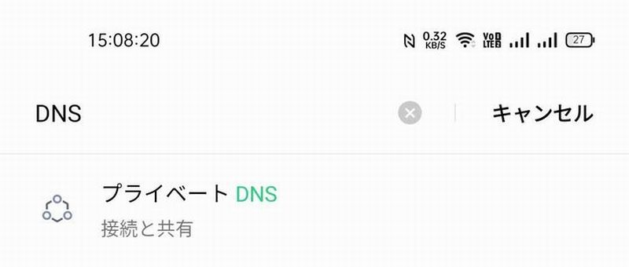
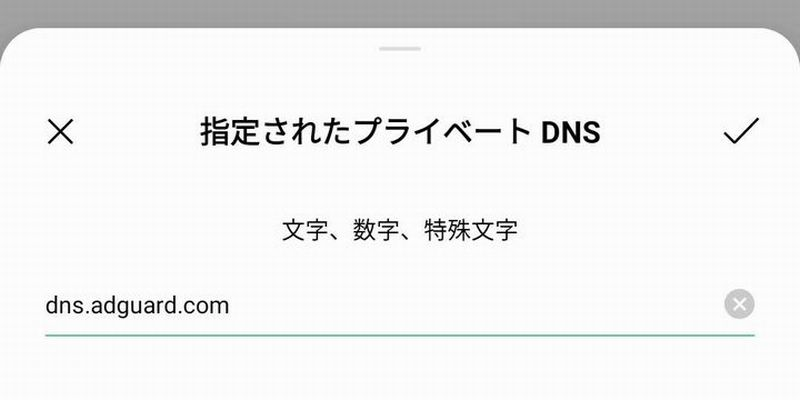

どうも、広告を掲載しているのに広告を消す方法を伝授しようとしている異端者のるなちです。
今日はうざったいスマホの広告を消す方法を記事にしたいと思います。
まぁそう言いながらこのページは広告だらけなんですけどね(理由は後述します)。
「AdGuardと言うサービスのDNS(詳しくは自分で調べてね)を利用して広告を非表示にする」と言うのが今回の記事で使われる手法です。
でも何をどうすればいいのかわからないよって感じでしょうから実際にステップをおって説明します。
とある物を利用して「広告を配信しているURLの通信だけを遮断する」のが今回の手法です。と言っても自分で設定するのは1項目だけなので比較的簡単ですよ。
まずは以下の文字列をコピーします。
dns.adguard.com
端末設定に移動するのですが、これが端末によってややこしいので設定の検索が出来る端末であれば以下のように"DNS"と検索して設定画面を出すのがやりやすいです。

もし見当たらなければ"端末名 DNS"などで検索してみるのが良いでしょう。大体はネットワーク関連のカテゴリにあります。
DNSの設定を手動にし、上記の文字列を入力します。

Wifiの設定を開き、使っているWifiの設定ボタンを押して、DNSを構成→手動→サーバーを追加、で完了です。
さて。ここまでの設定(スマホ/wifiにDNSを設定)が出来ればこのページの広告は全て消えるはずです(iPhoneの人は設定したWifiに繋いでないと消えませんが)。
ブラウザをリロードして、ここまでスクロールして広告が表示されなければ成功です、おめでとうございます。
表示されている場合はどこかの設定が間違ってる場合があります。Androidの方はご自分の機種のDNS入力方法を調べてみて、もう一度挑戦してみましょう。
この作業ではDNS(通信に関する物)を操作しますので、一部のアプリ(PrintSmash等)でWifiと接続できない現象が発生することがあります。
何か接続がおかしいなと思ったら一度DNSをオフにする事で改善されるはずなので、設定の位置or出し方は覚えておきましょう。
さて、これで忌々しい広告は消えましたでしょうか？
そうすることで私のサイトからは広告は消え去りますが、快適なインターネットブラウジングが出来る様になるのであれば私はそれで十分です。
この記事を読んで役に立ったなと思い、寄付をしたいなと思った方がもし居ましたらPayPayかKyashで送ってください。広告費よりも何倍も儲かります。
PayPay:l1n4r1a
Kyash:singingintherain
何かわからないことがありましたらTwitter@lunalightpまで、使用端末を明記の上ご相談ください。
わかりづらい端末の場合この記事に追記させて頂きます。
また、私の知り合いが(Android限定ですが)Twitter公式クライアントの広告を排除する記事を書いているのでそちらも良ければご覧ください。
【非root】Twitterアプリの広告をAndroid端末単体で消す【TwiFucker & LSPatch Manager】／まてかすのメモ帳
それではこのあたりで。
2022 L1n4r1A NoteS - Shirakaba Lunaco